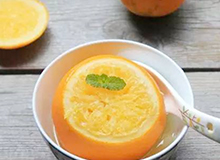

热点
母婴
养生
运动
当更年期遇上青春期
处在心理动荡期的两代人碰撞在一起，如何化解冲突？
来源：凤凰网
从运动员身上的火罐印说起
里约奥运会上，让拔火罐一时火了起来。
来源：人民网
药，到底该饭前吃还是饭后吃？
药应该啥时吃，这是一个困扰很多人已久的问题。
来源：搜狐

民间偏方有用吗？权威专家已验证通过
与其让不靠谱的偏方在亲友间流传，不如自己掌握安全有效的偏方。
来源：生命时报
听老人唠叨就是尽孝
有空多回家听听父母唠叨。
来源：人民网
告诉你家掌勺的9种吃法
你知道吗?即使你每次都选择营养丰富的食材,如果烹调方式不合理...
来源：今日头条
夏天打败你的不是炎热，而是“炎症”
我们常说“夏日炎炎”，大家往往只注意到了第一个“炎”——炎热，却忽视了...
来源：人民网
树立好榜样 捣蛋鬼也能养成男子汉
其实,只要培养得好，小伙子们可以展现出能干、细心、稳重、会照顾人等男性的魅力。
来源：人民网
跑步健身？警惕这十个最容易犯的错误
希望能帮大家健康安全地跑步。
来源：丁香医生
孕期饮食，周周有重点
准妈妈们到底该怎么吃，才能给孩子最好的营养？
来源：今日头条
母婴宝宝不爱喝水怎么办
妈妈平时最好不要给宝宝喝饮料，也可随身携带卡通水杯，提高宝宝喝水的兴趣。
来源：生命时报
皮肤科医生教你孕期护肤
古语有云：为母则强。原本娇不胜衣，情如小鸟的女子，在意识到自己即将为人母时
来源：太平洋亲子关系网
婆婆，请丢掉你老一套的育儿观，这句话，我听够了
过来人都说：「两个从未谋面过的陌生女子，只要一谈到婆婆，就能相拥而泣...
来源：丁香医生
孩子最害怕父母做的八件事
现在很多父母都希望孩子能够健健康康地成长，他们在培养子女方面都舍得花钱...
来源：腾讯网育儿
9种因素对女性生育力影响较大
现在很多父母都希望孩子能够健健康康地成长，他们在培养子女方面都舍得花钱...
来源：新浪育儿
洗澡后，别马上哄宝宝睡觉
临睡前，给宝宝洗个热水澡，然后干干净净地入睡可能是很多家长的常见做法，但其实...
来源：人民网
五种情况下 千万不要给宝宝打疫苗
接种疫苗是宝宝成长中的一件大事，可以保障宝宝不受一些疾病的侵害
来源：爱美女性网
刚怀孕要注意什么? 这20条不可忽视
怀孕是个大事，孕妇刚怀孕时总会有不知所措的感觉，尤其是第一次怀孕的孕妇
来源：齐鲁一点
宝宝奶粉冲多少？
对于新妈妈来说，给宝宝冲调奶粉也真是一门学问
来源：搜狐
母乳或奶瓶喂养拍嗝有讲究
出生不久的宝宝经常会出现呛奶、漾奶现象，是宝宝生病了吗？该如何避免呢？
来源：搜狐
这5种食物，跟消炎药一样靠谱
当咽喉、嘴角发炎，有多少人的第一反应是“快吃些消炎药”？
来源：人民网
资深专家支招夏季怎么吃最养生
酷暑将至，炎热的天气里，人们容易心烦上火，甚至出现脾胃不适、食欲不振等现象。
来源：凤凰网
夏天吃个酣畅淋漓的火锅注意啥
吃起来酣畅淋漓的火锅，似乎一年四季都是饭桌上的宠儿。
来源：人民网
如何戒烟最有效 告诉你小窍门
吸烟有害健康，这道理虽然人人都知道，但是烟瘾就是戒不掉，怎么办?
来源：搜狐
爱喝酒的人吃什么对肝脏好
长期喝酒的人要特别注意，喝酒后，多吃点这些，帮助减少对肝脏的伤害。
来源：中华养生网
男人备孕吃什么提高精子质量
备孕期间，男性的饮食也十分重要，男性需要吃一些健康的食物，来提高精子的质量。
来源：中华养生网
男人让脱发止步的方法
随着年龄的增长，脱发已经成为必然，“谢顶”的尴尬，常被自我调侃为“地方支援中央”。
来源：中华养生网
美国人也沉迷过「养生」
人的一生是「向死而生」的过程：古代有追求长生不老的炼丹术；现代人的丹...
来源：丁香医生
胃口不好,让它来帮您调理脾胃
人的一生是「向死而生」的过程：古代有追求长生不老的炼丹术；现代人的丹...
来源：搜狐
心脏病患者康复，只能静养、不能活动？
其实，现在国内心脏内科医生的主流观点是：稳定的心脏病病人可以做恰当的运动...
来源：丁香医生
夏天健身要注意哪些
俗话说：“冬练三九，夏练三伏”，高温天气下运动锻炼时该注意什么呢。
来源：中华养生网
健身避免变成大粗腿看这里
有些小伙伴平时不运动，偶尔运动一次后就会出现腰酸腿疼的感觉...
来源：51养生网
走路养生法走出健康长寿路
行走被誉为21世纪最好的锻炼方法之一，不但因为它不受时间、空间的限制，而且...
来源：中华养生网
两个瑜伽动作 常练习颈椎舒服了腹也不胀
万物出乎震，在这乍寒乍暖之际，适合养生，调理脾胃。
来源：中华养生网
关节炎患者跑步有技巧
有人说不运动关节退变加快，有人说运动可导致关节受伤害。
来源：中华养生网
健身后肌肉酸痛?试试这样
很多人久不运动，突然大重量健身后，第二天起床会感觉到浑身酸痛
来源：佚名
继A4腰后的新玩法什么是直角臂
继反手摸肚脐和A4腰后，又出现了一个新玩法，90°直角臂。
来源：中华养生网
饭后运动，是健康大忌吗
饭后半小时不能运动的定律真的科学吗？这是关于健康的真相，还是又一个都市传说呢？
来源：果壳
太极拳对身体的好处看完惊呆了
太极拳在中国的历史已经很久远了，太极拳现已是一种大众化的健身项目了...
来源：搜狐